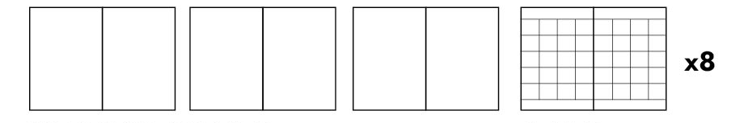
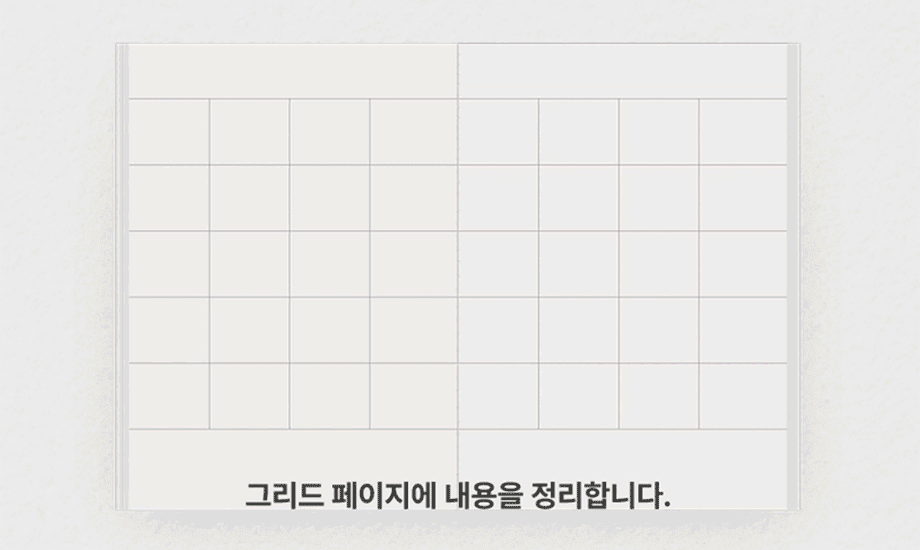

저는 좋아합니다, 필기.
필기를 하면, 내용을 놓치지 않고, 내 것으로 남길 수 있죠.
하지만 그냥 쓰다보면 단순히 쓰는 행위가 되어 버리기도 해요.
지면에는 남지만 머리에 남지 않고, 손만 아플 때요.
그래서 필기를 시작할지, 말아야할지 고민하다가 어느 때에는 하고, 어느 때에는 하지 않죠.
이것을 개선하고 싶어서 그라운드 앤 그리드 노트를 만들었어요.
무지 페이지에서 필기한 내용을 표 형태의 그리드페이지에서 다시 정리하는 콘셉트입니다.
필기를 하면, 내용을 놓치지 않고, 내 것으로 남길 수 있죠. 하지만 그냥 쓰다보면 단순히 쓰는 행위가 되어 버리기도 해요.
지면에는 남지만 머리에 남지 않고, 손만 아플 때요.
그래서 필기를 시작할지, 말아야할지 고민하다가 어느 때에는 하고, 어느 때에는 하지 않죠.
이것을 개선하고 싶어서 그라운드 앤 그리드 노트를 만들었어요. 무지 페이지에서 필기한 내용을 표 형태의 그리드페이지에서 다시 정리하는 콘셉트입니다.

필기만 하지 않고 정리까지 하라니, 다소 번거롭죠?
그런데 제법 괜찮아요. 공부와 필기의 효용감이 생겨요.
필기만 하지 않고 정리까지 하라니,
다소 번거롭죠?
그런데 제법 괜찮아요.
공부와 필기의 효용감이 생겨요.
이 예시는 제가 좋아하는 책, 앵무새 죽이기를 원서로 읽으며 필기한 거에요.
그냥 읽으면 이해가 정말 안되어서 필기를 했습니다.
이 예시는 제가 좋아하는 책, 앵무새 죽이기를 원서로 읽으며 필기한 거에요. 그냥 읽으면 이해가 정말 안되어서 필기를 했습니다.

우선 하나의 챕터를 공부해볼께요.
문단 순서에 번호를 달고, 각 문단에서 모르는 단어와 표현, 주요 내용을 필기합니다.
우선 하나의 챕터를 공부해볼께요.
문단 순서에 번호를 달고, 각 문단에서 모르는 단어와 표현, 주요 내용을 필기합니다.
다음은 정리하는 그리드페이지입니다.
40칸의 그리드에 앞서 필기한 문단 순서와 내용을 각 칸에 넣어줍니다.
문단이 40개가 넘으면 1칸에 여러 문단이 들어가야 하지만, 이 챕터에서는 오히려 남았어요.
그리고 내용이 유사한 것들을 형광펜으로 그룹핑해줍니다.
다음은 정리하는 그리드페이지입니다. 40칸의 그리드에 앞서 필기한 문단 순서와 내용을 각 칸에 넣어줍니다. 문단이 40개가 넘으면 1칸에 여러 문단이 들어가야 하지만, 이 챕터에서는 오히려 남았어요.
그리고 내용이 유사한 것들을 형광펜으로 그룹핑해줍니다.

🟩 먼저 도입부에서 토요일에 겪은 일을 스카우트가 소개했네요.
🟨 그리고 아빠에게 스카우트가 들은 단어를 묻자 고모가 대화에 끼어듭니다.
두 어른의 대화에 스카우트는 두려움을 갖습니다.
🟧 오빠인 젬이 와서 스카우트를 나무라고, 둘은 싸우게 됩니다.
🟥 아빠인 아티커스는 스카우트를 달래고 재우지만,
🟦 집에서 도망나온 친구 딜이 스카우트의 침대 아래 있었습니다. 딜은 학대를 당해서 가출했다고 했지만, 사실은 어린아이가 가진 불안함이 가족들에게 위로받지 못했기 때문입니다.
🟩 집안의 어른들이 알게 되고, 딜은
집안의 어른들이 알게 되고, 딜은 우선 그 집에 하룻밤 머물기로 일단락됩니다.
스카우트는 딜에게 마을의 수수께끼 같은 존재, 부 래들리가 도망가지 않았을거라 생각하냐고 묻습니다. 그러자 딜은 잠결에, 부 래들리는 도망갈 곳 조차 없을거라고 답합니다.
🟩 먼저 도입부에서 토요일에 겪은 일을 스카우트가 소개했네요.
🟨 그리고 아빠에게 스카우트가 들은 단어를 묻자 고모가 대화에 끼어듭니다.
두 어른의 대화에 스카우트는 두려움을 갖습니다.
🟧 오빠인 젬이 와서 스카우트를 나무라고, 둘은 싸우게 됩니다.
🟥 아빠는 스카우트를 달래고 재우지만,
🟦 집에서 도망나온 친구 딜이 스카우트의 침대 아래 있었습니다. 딜은 학대를 당해서 가출했다고 했지만, 사실은 어린아이가 가진 불안함이 가족들에게 위로받지 못했기 때문입니다.
🟩 집안의 어른들이 알게 되고, 딜은 우선 그 집에 하룻밤 머물기로 일단락됩니다.
스카우트는 딜에게 마을의 수수께끼 같은 존재, 부 래들리가 도망가지 않았을거라 생각하냐고 묻습니다. 그러자 딜은 잠결에, 부 래들리는 도망갈 곳 조차 없을거라고 답합니다.
이렇게 하고보니, 이 챕터의 구조가 어떻게 되었는지 더 잘 이해가 되었어요.
도입부에 배경이 살짝 소개되고, 아빠와 고모의 대화를 불안하게 듣는 스카우트가 등장해요.
어른들의 사랑을 충분히 느끼지 못해 불안해하는 어린 스카우트의 모습이
뒤이어 등장한 친구 딜과도 연결됩니다.
이렇게 하고보니, 이 챕터의 구조가 어떻게 되었는지 더 잘 이해가 되었어요.
도입부는 배경이 작게 소개되고, 아빠와 고모의 대화를 불안하게 듣는 스카우트가 등장해요.
어른들의 사랑을 충분히 전해받지 못해 불안해하는 어린 스카우트의 모습이 뒤이어 등장한 친구 딜과도 연결됩니다.
여러 소동이 일단락되고, 마지막 두 아이의 대화는 다시 책의 전체 이야기로 향합니다.
여러 소동이 일단락되고, 마지막 두 아이의 대화는 다시 책의 전체 이야기로 향합니다.
부 래들리에 대한 언급으로요. 부 래들리는 이 책의 주요한 인물 중 하나입니다.
부 래들리는 도망갈 곳조차 없기 때문에, 그 집에 숨어있을 것이라고 딜이 답합니다.
어린아이의 통찰력이 돋보여 놀랍지만, 또한 서글픈 느낌이 들며 챕터가 마무리됩니다.
부 래들리에 대한 언급으로요. 부 래들리는 이 책의 주요한 인물 중 하나입니다.
부 래들리는 도망갈 곳조차 없기 때문에, 그 집에 숨어있을 것이라고 딜이 답합니다.
어린아이의 통찰력이 돋보여 놀랍지만, 또한 서글픈 느낌이 들며 챕터가 마무리됩니다.

Ground & Grid Note
128*180mm(B6사이즈), 64p, 내지 미색 모조지 100g
Ground & Grid Note
128*180mm(B6사이즈), 64p
내지 미색 모조지 100g